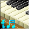
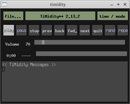
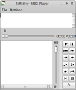
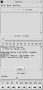

TiMidity
Dieser Artikel wurde für die folgenden Ubuntu-Versionen getestet:
Ubuntu 16.04 Xenial Xerus
Zum Verständnis dieses Artikels sind folgende Seiten hilfreich:

TiMidity  ist ein unter GPL herausgegebener Software-Synthesizer, der MIDI-Dateien entweder direkt abspielt oder aber als Tonerzeuger für einen Sequenzer wie z.B. Rosegarden dient. Das Programm verwendet Gravis Ultrasound-kompatible Patch-Dateien oder Soundfonts (.sfx, .sf2), um Audiodaten aus MIDI-Dateien zu generieren. So können die erzeugten Daten in Echtzeit über ein Audiogerät abgespielt werden oder in einer Datei abgespeichert werden. Beim Abspielen in Echtzeit kann TiMidity die Textinformationen, die in KAR- oder WRD-Dateien enthalten sind, anzeigen.
ist ein unter GPL herausgegebener Software-Synthesizer, der MIDI-Dateien entweder direkt abspielt oder aber als Tonerzeuger für einen Sequenzer wie z.B. Rosegarden dient. Das Programm verwendet Gravis Ultrasound-kompatible Patch-Dateien oder Soundfonts (.sfx, .sf2), um Audiodaten aus MIDI-Dateien zu generieren. So können die erzeugten Daten in Echtzeit über ein Audiogerät abgespielt werden oder in einer Datei abgespeichert werden. Beim Abspielen in Echtzeit kann TiMidity die Textinformationen, die in KAR- oder WRD-Dateien enthalten sind, anzeigen.
Unterstützte MIDI-Dateiformate:
Standard-MIDI (.mid und .rmi (Formate 0, 1, 2))
Recomposer (.rcp, .r36, .g18, .g36)
Module files (.mod):
.mfi (MFi Version 3 - Melody Format for i-Mode, Japanisches Handyformat)
.kar (Dateiformat für Karaoke-Liedtexte)
.wrd (WRD-Format)
Installation¶
Das Programm ist in den offiziellen Paketquellen vorhanden. Folgendes Paket muss installiert [1] werden:
timidity (universe)
 mit apturl
mit apturl
Paketliste zum Kopieren:
sudo apt-get install timidity
sudo aptitude install timidity
Hier muss zum Abspielen nicht erst ein SoundFont installiert werden, denn TiMidity bewältigt diese Aufgaben selbst. Allerdings ist das von TiMidity als Standard benutzte Soundfont nicht sehr umfangreich, so dass beim Abspielen von MIDI-Dateien oft einzelne Instrumente nicht zu hören sind. Mehr Spaß macht TiMidity mit dem Soundfont:
fluid-soundfont-gm (universe, ca. 120 MiB)
mit apturl
Paketliste zum Kopieren:
sudo apt-get install fluid-soundfont-gm
sudo aptitude install fluid-soundfont-gm
In der Datei /etc/timidity/timidity.cfg muss für dieses Soundfont die Zeile
source /etc/timidity/freepats.cfg
geändert werden in [5]
source /etc/timidity/fluidr3_gm.cfg
Dazu benötigt man Root-Rechte.
Für weitere grafische Benutzeroberflächen muss evtl. das Paket installiert werden:
timidity-interfaces-extra (universe, ca. 246kB)
mit apturl
Paketliste zum Kopieren:
sudo apt-get install timidity-interfaces-extra
sudo aptitude install timidity-interfaces-extra
Benutzung¶
Das Programm bietet sehr umfangreiche Anwendungsmöglichkeiten, von denen in diesem Artikel nur die wichtigsten dargestellt werden sollen. Für über die Informationen in diesem Artikel hinausgehende Fragestellungen empfiehlt sich der Blick in die sehr umfangreichen Manpages:
man timitidy
TiMidity wird normalerweise auf der Kommandozeile verwendet. Der allgemeine Befehl zum Abspielen von MIDI-Dateien lautet:
timidity OPTIONEN DATEI [DATEI1 DATEI2...]
Beispiel:
timidity midi.mid
Dateinamen¶
Folgende Adressdaten/Dateinamensformen sind zugelassen:
| Übersicht über die Dateinamensmöglichkeiten | |
| Dateinamensform | Bedeutung |
/PFAD/ZUR/DATEI/DATEINAME | MIDI-Datei aus einem bestimmten Pfad auslesen |
dir:ORDNERoder ORDNER/ | Alle MIDI-Dateien im Ordner abspielen |
http://ADRESSE/DES/NETZWERKS/midi.midoder ftp://ADRESSE/DES/NETZWERKS/midi.mid | Spielt die Datei midi.mid, welche in der URL angegeben ist, ab. |
ARCHIVDATEI | Die Dateien aus einem Archiv extrahieren und abspielen. |
ARCHIVDATEI#MIDI-DATEINAME | Bestimmte MIDI-Datei (auch Platzhalter, keine Unterscheidung von Groß- und Kleinschreibung) aus Archiv abspielen. |
Beispiele:
Spielt datei.mid in archiv.zip ab:
timidity archiv.zip#datei.mid
Spielt alle Dateien in archiv.lzh, welche mit dem Platzhalter
*.midübereinstimmen, ab:timidity archiv.lzh#*.mid
Spielt alle MIDI-Dateien in archiv.tgz ab. Der Ausdruck
archiv.tgz#*hat die gleiche Funktion wiearchiv.tgz:timidity archiv.tgz#*
Folgende Archivdateitypen werden unterstützt:
TAR (.tar)
TAR+GZIP (.tar.gz, .tgz)
ZIP (.zip)
LZH/LHA (.lzh, .lha (lh0, lh1, lh2, lh3, lh4, lh5, lh6, lz4, lzs und lz5))
Ansichtsoptionen¶
TiMidity mit einer grafischen Benutzeroberfläche starten¶
GTK+ Interface:
timidity -ia
X Athena Widget Interface:
timidity -ig
Tcl/Tk-Interface:
timidity -ik
|  |
| GTK+ Interface |
|  |
| X Athena Widget Interface |
|  |
| Tcl/Tk-Interface |
TiMidity im Terminal starten¶
ncurses-Textoberfläche:
timidity -in
S-Lang Interface:
timidity -is
Das Beenden der jeweiligen Terminal-Oberflächen erfolgt mit der Taste Q .
Zusatzoptionen zu den grafischen Oberflächen¶
Für einige Oberflächen sind Zusatzoptionen ins Programm eingearbeitet, die direkt an die ausgewählte Interface-Option angehängt werden und weitere grafische Abspielinformationen bereitstellen.
| Übersicht über die Zusatzoptionen | ||
| Kurzform | Langform | Bedeutung |
v | Erhöht die Ausführlichkeit der ausgegebenen Informationen (verbose). | |
q | Reduziert die Ausführlichkeit der ausgegebenen Informationen (Standardeinstellung; quiet). | |
t | Blendet den Ablaufverfolgungsmodus (trace-mode) ein, der Echtzeit-Informationen zu den einzelnen Kanälen anzeigt. | |
l | --[no-]loop | Abspielen in Endlosschleife; einige grafische Oberflächen ignorieren diese Option (möglich z.B. im S-Lang Interface). |
s | --[no-]sort | Sortiert vor dem Abspielen die Eingabedateien in alphabetischer Reihenfolge. |
r | --[no-]random | Randomisiert die Reihenfolge der Eingabedateien und spielt in zufälliger Abfolge ab. |
Klang-Spektrogramm¶
Mit der Option -g n bzw. --spectrogram=n lässt sich in einem separaten Fenster ein Klang-Spektrogramm (Sonagramm) zur Frequenzanalyse einblenden. Der Wert für n definiert das Auffrischungsintervall des Spektrogramms in Sekunden. Dies Funktion steht nur bei laufendem X-Window-System zur Verfügung.
Tipp: Je nach Musikstück können auch Werte kürzer als 1 Sekunde, z.B. 0.2 oder 0.5, sinnvoll sein.
Manipulationsoptionen¶
Das Programm TiMidity bietet noch andere interessante Abspieloptionen, die der Abspiel- und Klangmanipulation dienen.
| Manipulationsoptionen | ||
| Kurzform | Langform | Bedeutung |
-K n | --adjust-key=n | Transponiert die Musik um n Halbtöne nach oben oder nach unten. Möglich für n sind Werte von -24 bis 24. |
-H n | --force-keysig=n | Ändert die Tonart: die MIDI-Wiedergabe wird in die Tonart mit der durch n festgelegten Anzahl von Kreuzvorzeichen (falls n positiv) oder b-Vorzeichen (falls n negativ) transponiert. Für n sind Werte von -7 bis 7 zugelassen. Beispiel: wenn n den Wert 1 hat, wird die MIDI-Wiedergabe nach G-Dur/e-moll (1 Kreuzvorzeichen) transponiert. |
-p n | --polyphony=n | Reduziert die Mehrstimmigkeit (maximale Anzahl der simultan abgespielten Stimmen) auf den Wert von n. |
-Q n[,...] | --mute=n[,...] | Schaltet Kanal n aus. Mehrere auszublendende Kanäle werden durch Komma ‘,’ getrennt. Ist der Wert für n gleich 0, werden alle Kanäle ausgeschaltet. In diesem Fall können einzelne Kanäle durch Angabe eines negativen Werts wieder eingeblendet werden. Beispiel: die Option -Q 0,-3 schaltet alle Kanäle ab, blendet den Kanal 3 jedoch wieder ein, so daß nur dieser zu hören ist. |
-R n | Aktiviert Halleffekt. Die Dauer des Nachhalls wird durch den Wert n in Millisekunden angegeben. Wenn für n der Wert 0 eingegeben ist, wählt TiMidity automatisch den vorgegebenen Standardwert von 800ms. | |
-T n | --adjust-tempo=n | Konfiguriert das Abspieltempo auf n% |
-Zpure | Versucht je nach Eingabedatei in reiner (d.h. in nicht gleichstufig temperierter) Stimmung abzuspielen. | |
-D n | --drum-channel=n | Markiert den Kanal n als Schlagzeugkanal, d.h. statt eines Instrumentenklangs wird ein Schlagzeugklang ausgegeben. Wenn ein Kanal mittels -n negativ markiert ist, wird er explizit als instrumentaler Kanal wiedergegeben. Hat n den Wert 0 zugewiesen bekommen, werden alle Kanäle als instrumental markiert. |
-A n | -amplification=n | Verstärkung: Multipliziert die Lautstärke der Wiedergabe um n%. Erlaubt für n sind Werte von 0 (kein Klang) bis 800. Voreingestellter Standardwert ist 70%. Höhere Verstärkung erzeugt lauteren Klang. |
-A ,m | --drumpower=m | Schlagzeuglautstärke: Spezifiziert die Lautstärke des Schlagzeugkanals in Relation zu den anderen Kanälen. Erlaubt für m sind Werte von 0 (kein Klang) bis 800. |
-A a | --[no-]volume-compensation | Lautstärkeausgleich: Optional kann der Buchstabe a oder der Zusatz --volume-compensation angefügt werden. Dies weist TiMidity an, die Lautstärke automatisch zu regulieren. Dies erlaubt eine Vergrößerung des Dynamikbereichs.Tipp: Die Optionen zu Verstärkung, Schlagzeuglautstärke und Lautstärken-Kompensierung können beliebig kombiniert werden (siehe Beispiele zu Abspieloption -A) |
Beispiele zu Abspieloption -A (Verstärkung, Schlagzeuglautstärke und Lautstärkeausgleich):
-A90: Abspiellautstärke 90%, Schlagzeuglautstärke Standard 100%, Lautstärkeausgleich aus.-A,120: Abspiellautstärke Standard 70%, Schlagzeuglautstärke 120%, Lautstärkeausgleich aus.-A90,120: Abspiellautstärke 90%, Schlagzeuglautstärke 120%, Lautstärkeausgleich aus.-Aa: Abspiellautstärke Standard 70%, Schlagzeuglautstärke Standard 100%, Lautstärkeausgleich ein.-A90a: Abspiellautstärke 90%, Schlagzeuglautstärke Standard 100%, Lautstärkeausgleich ein.-A,120a: Abspiellautstärke Standard 70%, Schlagzeuglautstärke 120%, Lautstärkeausgleich ein.-A90,120a: Abspiellautstärke 90%, Schlagzeuglautstärke 120%, Lautstärkeausgleich ein.
Konvertieren¶
TiMidity kann MIDI-Dateien mittels des Schalters -O in andere Formate umwandeln. Die Eingabedatei wird hierbei direkt angegeben. Die Ausgabedatei wird durch den Parameter -o definiert. Das Umwandeln von MIDI-Dateien in ein anderes Format erfolgt prinzipiell nach dem Schema
timidity -O[AUSGABEOPTIONEN][ZUSATZOPTIONEN] EINGABEDATEI -o AUSGABEDATEI
Ausgabeoptionen¶
Die Ausgabeoptionen werden an den Befehlsteil -O direkt angefügt. Mögliche Ausgabeoptionen zu -O sind:
Übersicht über die an -O anhängbaren Ausgabeoptionen | |
| Option | Bedeutung |
r | raw waveform generieren. |
u | Generiere Sun Audio Daten (.au) |
a | Generiere AIFF-Daten |
w | Ausgabe im RIFF WAVE-Format |
v | OGG/Vorbis |
F | FLAC |
S | Speex |
Zusatzoptionen¶
Zusätzliche Formatoptionen können an die Anweisung -O[AUSGABEOPTION] direkt angefügt werden:
| Übersicht über die Zusatzoptionen | ||
| Kurzform | Langform | Bedeutung |
S | --output-stereo | Stereo |
M | --output-mono | Mono |
s | --output-signed | Vorzeichenbehaftete Ausgabe |
u | --output-unsigned | Nicht-Vorzeichenbehaftete Ausgabe |
8 | --output-8bit | 8-bit Sample-Breite |
1 | --output-16bit | 16-bit Sample-Breite |
2 | --output-24bit | 24-bit Sample-Breite |
l | --output-linear | Lineare Codierung |
U | --output-ulaw | u-Law (8-bit) Codierung |
A | --output-alaw | A-Law encoding |
x | --[no-]output-swab | [nicht-]bytevertauschte Ausgabe |
Hinweis:
Einige Optionen haben in einigen Konvertierungsmodi keinen Effekt. Zum Beispiel ist es nicht möglich, eine RIFF WAVE-Datei mit Zusatzoption output-swab zu erstellen oder auf einem Linux PCM-Gerät einen uLaw-Output zu erzwingen.
Beispiele:
Umwandeln von MIDI-Dateien ins WAV-Format:
timidity -OwS input.mid -o output.wav
Umwandeln von MIDI-Dateien nach u-Law:
timidity -OrU input.mid -o output.wav
Umwandeln von MIDI-Dateien nach PCM 16-bit signiert linear:
timidity -Or1sl input.mid -o output.wav
Umwandeln von MIDI-Dateien nach PCM 8-bit unsigniert linear:
timidity -Or8ul input.mid -o output.wav
Weitere Programmoptionen:¶
-h,--helpzeigt Hilfe-Informationen ab.-v,--versioninformiert über die Programmversion und die Lizenzbedingungen.
Serverfunktionalität¶
TiMidity ist als Server startbar, um anderen Programmen (wie pmidi) einen Port anzubieten:
timidity -iA -B2,8 -Os1l -s 44100
Wenn man TiMidity nur ab und zu nutzen möchte und auch mal ein Sequenzer-Programm einsetzen möchte, kann man sich ein kleines Skript, zum Beispiel startmidi schreiben:
sudo modprobe snd-seq-device sudo modprobe snd-seq-midi sudo modprobe snd-seq-oss sudo modprobe snd-seq-midi-event sudo modprobe snd-seq timidity -iA -B2,8 -Os1l -s 44100
Um die Datei ausführbar zu machen:
chmod 755 startmidi
Nun kann man einfach das Skript starten und hat sofort ein MIDI-Ausgabegerät zum Beispiel für den Sequenzer Rosegarden zur Verfügung. Nach dem Ausführen bekommt man die Ausgabe:
Timidity starting in ALSA server mode
Opening sequencer port 128:0 128:1Falls es beim Abspielen "ruckelt", kann man die Reverb und Chorus wie folgt abschalten:
timidity -iA -B2,8 -Os1l -s 44100 -EFreverb=0 -EFchorus=0
Ein Blick in die Manpage lohnt sich auf jeden Fall.
Probleme¶
Unter Ubuntu 16.04 funktioniert ggf. die GTK+-Oberfläche nicht, eine Lösung ist nicht bekannt; siehe im Forum.
 Übersichtsartikel
Übersichtsartikel- Erstellt mit Inyoka
-
 2004 – 2017 ubuntuusers.de • Einige Rechte vorbehalten
2004 – 2017 ubuntuusers.de • Einige Rechte vorbehalten
Lizenz • Kontakt • Datenschutz • Impressum • Serverstatus -
Serverhousing gespendet von